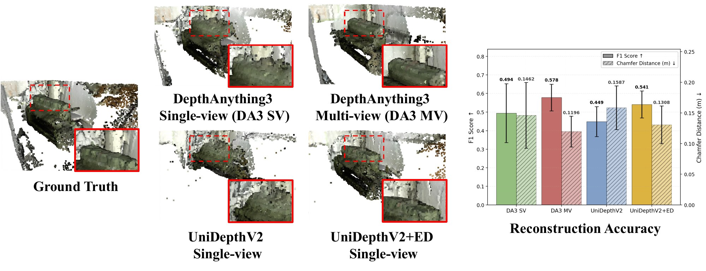
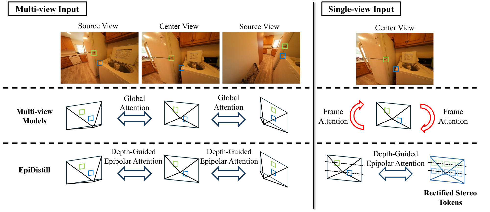
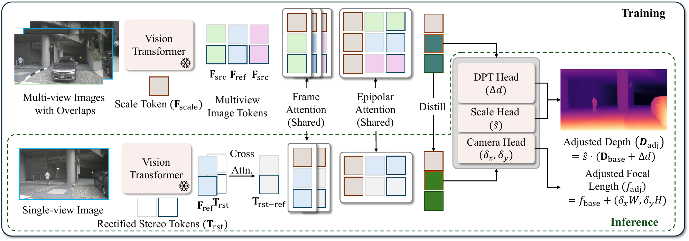
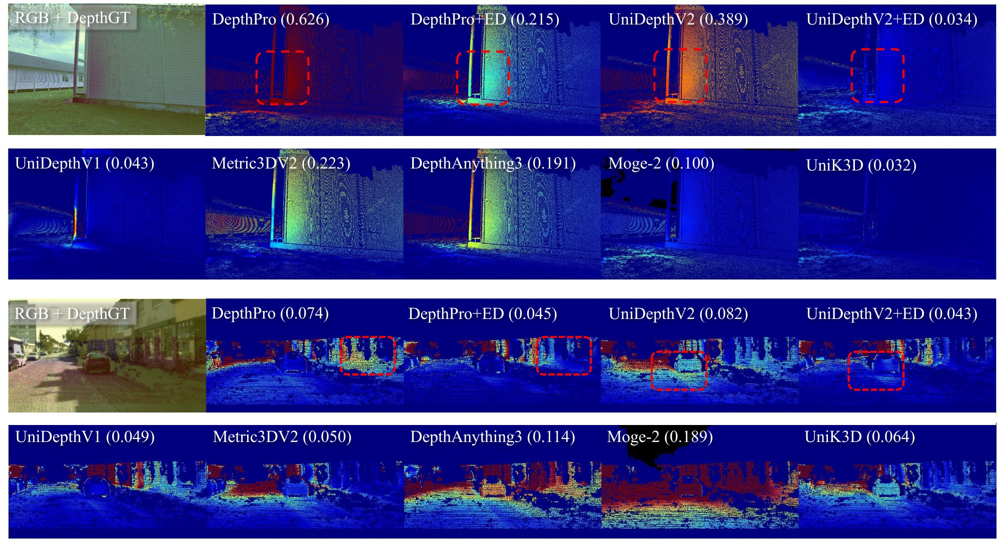

ECCV 2026 · MALMÖ · SEPT 8–12
EpiDistill enables single-view models to inherit the scale robustness of multi-view geometry, achieving precise 3D scene reconstruction without requiring multi-view inputs at inference.
Monocular depth foundation models have demonstrated remarkable generalization capabilities across diverse environments. However, they continue to struggle with metric depth estimation. This limitation stems from the inherent scale ambiguity of single-view inference, leading to misaligned scale predictions even when the relative geometry is accurate. Conversely, recent multi-view foundation models leverage cross-view cues to learn robust scene-level geometry and consistent scale. Yet, these benefits typically vanish during single-image inference, as the absence of explicit geometric constraints causes performance to degrade.
To bridge this gap, we propose a novel framework that transfers the scale-aware geometric priors of multi-view models into monocular depth foundation models. Specifically, we introduce Epipolar Distillation (EpiDistill), an approach utilizing Rectified Stereo Tokens, which enables the single-view prediction model to retain epipolar attention patterns and maintain geometric consistency without requiring multi-view inputs at inference. Experimental results demonstrate that our method significantly improves zero-shot metric depth estimation, particularly on challenging datasets like ETH3D and DIODE where scale alignment is critical. Furthermore, our approach is model-agnostic, consistently boosting the performance of state-of-the-art ViT-based models, including UniDepthV2 and DepthPro.


Restricted to single-view inputs, global cross-view pathways degrade immediately into standard self-attention, creating a critical geometry mismatch between training and inference. Vital metric scale priors are lost. EpiDistill preserves this structural integrity by pairing depth-guided epipolar attention with rectified stereo tokens.

Training. The multi-view branch receives a reference image together with overlapping source views. Its epipolar attention restricts each reference query to tokens sampled along the corresponding epipolar line in the source view. The attention is supervised against a depth-guided target, so that the layer learns to localize 3D correspondences rather than merely to sample the line.
Inference. The single-view branch reuses the same shared layers, substituting the missing source view with a learnable grid of Rectified Stereo Tokens. For a rectified stereo pair the rotation is identity and the baseline purely horizontal, so the epipolar geometry reduces to a single horizontal scanline that is independent of the baseline. Cross-attention with the reference features conditions the grid on the scene, and the shared epipolar layers operate on it as they do during training. A distillation term aligns the single-view tokens with their multi-view counterparts, transferring the geometric prior.
Evaluated against Metric3Dv2, UniDepthV1, UniK3D, MoGe-2 and DepthAnything3 under the UniDepthV2 protocol with identical depth caps and valid-region masks. Bold = best and underline = second best among image-only models; † uses ground-truth intrinsics at inference.

In a dolly zoom the camera translates along its optical axis while the focal length changes to hold the subject's 2D size constant: the image is nearly unchanged while the metric depth varies substantially. A model that has merely memorized an image-to-depth prior cannot satisfy both. Because the ground-truth camera is unknown on DepthPerturb's dolly zoom set, intrinsic quality is measured as the Pearson correlation |PCorr| between the predicted focal length and the frame index, which varies linearly by construction.
@inproceedings{kim2026epidistill,
title = {Geometric Distillation from Rectified Stereo:
Leveraging Epipolar Cues for Monocular Depth},
author = {Kim, Jung-Hee and Liu, Xiaoming},
booktitle = {European Conference on Computer Vision (ECCV)},
year = {2026},
eprint = {2607.15600},
archivePrefix = {arXiv}
}